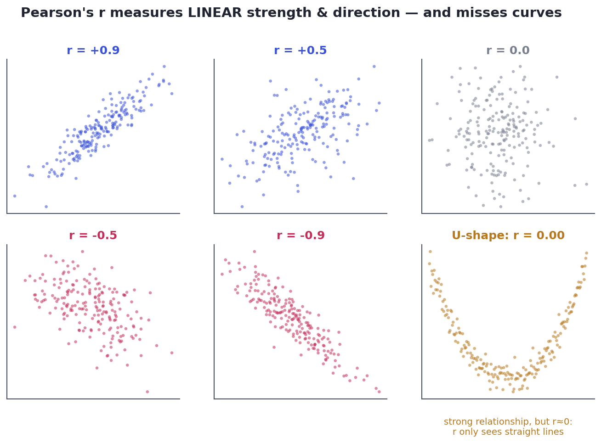
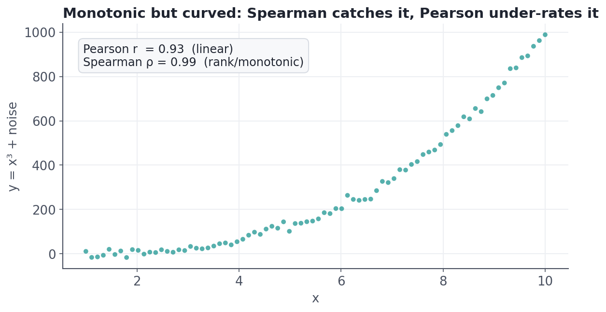
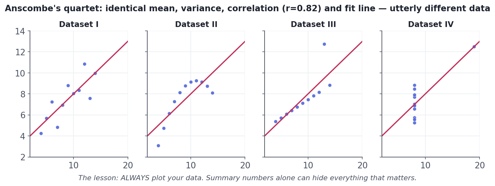

Correlation — and Its Traps
Pearson vs. Spearman, what r does and doesn't capture, and the famous datasets that prove a single number can deceive.
Almost every analysis eventually asks 'do these two things move together?' — ad spend and sales, study time and grades, price and demand. Correlation puts a single number on that. But it is one of the most over-trusted numbers in all of data work: it only sees straight lines, it can hide a wild shape behind a tidy value, and — most famously — it is not causation. This lesson gives you the tool and its warning label.
ConceptWhat correlation measures
The correlation coefficient (Pearson's r) is a single number from −1 to +1 summarizing the linear relationship between two numeric variables:
- The sign is the direction: positive means they rise together, negative means one rises as the other falls.
- The magnitude is the strength: ±1 is a perfect straight line, 0 is no linear relationship.
Under the hood it's standardized covariance — covariance measures whether two variables vary together, and dividing by their standard deviations rescales it to the clean −1..+1 range so different pairs are comparable.

Concept · two flavorsPearson vs. Spearman
Pearson's r measures linear association on the raw values. Spearman's ρ (rho) measures monotonic association by first converting each variable to ranks — so it asks 'as one goes up, does the other consistently go up (or down)?' without requiring a straight line. Use Spearman when the relationship is curved-but-consistent, or when you have ordinal data or outliers (ranks tame extreme values).

Concept · the cautionary taleAlways plot first: Anscombe's quartet
In 1973 the statistician Francis Anscombe built four datasets with identical summary statistics — same means, same variances, same correlation (r = 0.82), same regression line — that look nothing alike. It is the single most persuasive argument for plotting your data before trusting any summary number.

Concept · the famous warningCorrelation is not causation
This is the one everyone quotes and many still forget. Two variables can correlate strongly while neither causes the other. The usual culprit is a confounder — a hidden third variable driving both.

There are three ways a correlation can fool you: a confounder drives both (above); reverse causation (maybe Y causes X, not X causes Y); or pure coincidence (with enough variables, some will correlate by chance — 'spurious correlations'). Establishing real causation needs more than a correlation — ideally a randomized experiment (Track 6) or careful causal methods (Track 7). For now, the discipline is simply: never write 'causes' when all you have is 'correlates.'
Worked exampleMeasure it in code
Watch Pearson and Spearman behave on three relationships — a clean line, a monotonic curve, and a U-shape — and see why a single coefficient is never the whole story.
import numpy as np
from scipy import stats
rng = np.random.default_rng(2)
x = rng.uniform(-3, 3, size=300)
linear = 2*x + rng.normal(0, 1.0, 300) # straight line
curved = np.exp(x) + rng.normal(0, 1.0, 300) # always increasing, but curved
ushape = x**2 + rng.normal(0, 1.0, 300) # strong, but not monotonic
print(f"{'relationship':18s} {'Pearson r':>10s} {'Spearman rho':>13s}")
for name, y in [("linear", linear), ("monotonic-curved", curved), ("U-shaped", ushape)]:
pr = stats.pearsonr(x, y)[0]
sr = stats.spearmanr(x, y)[0]
print(f"{name:18s} {pr:>+10.2f} {sr:>+13.2f}")
print("\nLinear: both high. Curved: Spearman > Pearson. U-shape: BOTH ~0 -> you must plot it.")relationship Pearson r Spearman rho linear +0.96 +0.97 monotonic-curved +0.81 +0.84 U-shaped -0.00 -0.05 Linear: both high. Curved: Spearman > Pearson. U-shape: BOTH ~0 -> you must plot it.
The U-shape is the punchline: a strong, obvious relationship that both coefficients score near zero. No single correlation number can be trusted without a picture — which is why every EDA (Track 5) starts with scatterplots.
★ Key points to remember
- Pearson's r (−1 to +1) measures linear association: sign = direction, magnitude = strength; it is blind to curves.
- Spearman's ρ works on ranks and captures any monotonic relationship; prefer it for curved-but-consistent data, ordinal data, or outliers.
- Always plot. Anscombe's quartet proves identical summary stats can hide wildly different data.
- Correlation ≠ causation. Beware confounders, reverse causation, and coincidence.
- Proving causation needs experiments (Track 6) or causal methods (Track 7) — not a correlation coefficient.
◆ Practice▸
Show solution & reasoning
49% is r² = 0.7² = 0.49, the coefficient of determination — the share of variance in exam score linearly associated with hours studied. The number is right, but 'explained by' overstates it: r² describes shared linear variation, not proven causation. Studying may help, but confounders (motivation, prior ability) could inflate the association. Safer: 'studying accounts for about 49% of the variation in scores, though this is association, not proof of cause.'
Show solution & reasoning
Confounder: highly engaged customers both use the app more and spend more — engagement drives both. Reverse causation: big spenders use the app more because they're already invested, not the other way around. Why more data won't fix it: a bigger sample shrinks the standard error, making the correlation more precise — but precision isn't causation. Only a randomized experiment (nudge some users to use the app more and compare revenue) or a causal method can establish direction.
◎ Deep dive: r-squared, spurious correlations, and the path from correlation to causation▸
r², the coefficient of determination. Squaring the correlation gives r², the proportion of variance in one variable that is linearly associated with the other. r = 0.7 → r² = 0.49, so about half the variation is shared linearly. It's a useful effect-size companion to r — but the word people reach for, 'explained,' smuggles in causation it hasn't earned.
Spurious correlations. Search enough unrelated time series and some will correlate beautifully by pure chance — US cheese consumption and deaths by bedsheet entanglement, the famous examples. With many variables, high correlations will appear randomly, which is why a correlation needs a plausible mechanism and ideally a pre-registered hypothesis, not just a striking scatterplot found after the fact.
The road to causation. To move from 'correlates' to 'causes' you need to rule out confounders and reverse causation. The gold standard is a randomized experiment (Track 6): randomly assigning the treatment breaks the link to confounders. When you can't experiment, causal inference methods (Track 7) — controlling for confounders, matching, difference-in-differences — get you closer. This lesson is the doorway to both.
"What's the difference between correlation and causation?" and "how would you tell them apart?" are perennial. Define correlation as linear co-movement, give the ice-cream/drownings confounder, and name the three traps (confounding, reverse causation, coincidence). Then land the closer: to establish causation you randomize (an experiment) or use causal-inference methods — never a coefficient alone.